<ion-tabs class="tab-style" (ionTabsWillChange)="onTabsWillChange($event)">
  <ion-tab-bar slot="bottom" selectedTab="home">
    <ion-tab-button tab="mosaic">
      <div [ngClass]="this.tabActive === 'mosaic' ? 'button-touched' : ''">
        
      </div>
    </ion-tab-button>
    <ion-tab-button tab="home">
      <div [ngClass]="this.tabActive === 'home' ? 'button-touched' : ''">
        <ion-icon class="icon-header" name="restaurant-outline"></ion-icon>
      </div>
    </ion-tab-button>
    <ion-tab-button tab="emoji">
      <div [ngClass]="this.tabActive === 'emoji' ? 'button-touched' : ''">
        
      </div>
    </ion-tab-button>

  </ion-tab-bar>
</ion-tabs>